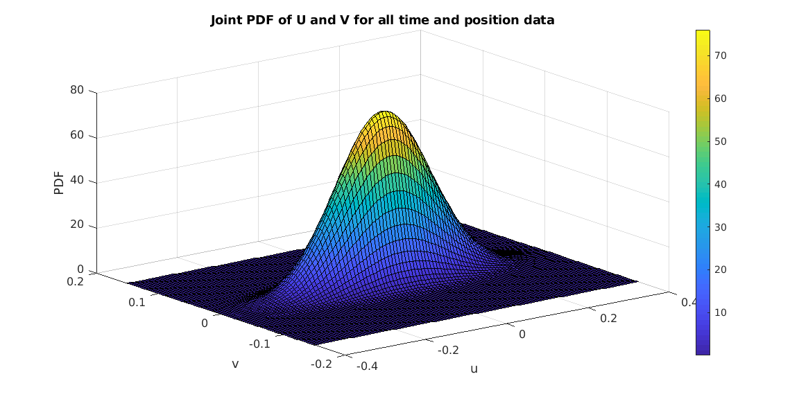
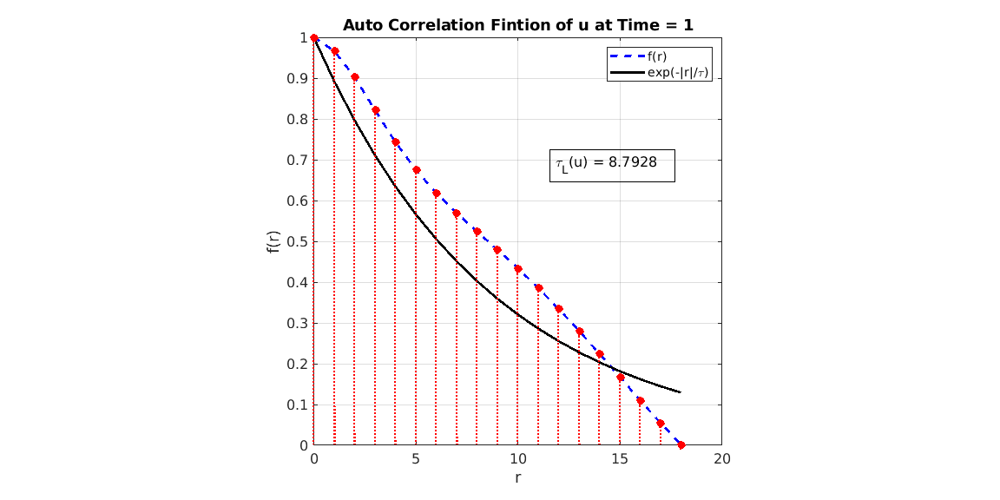
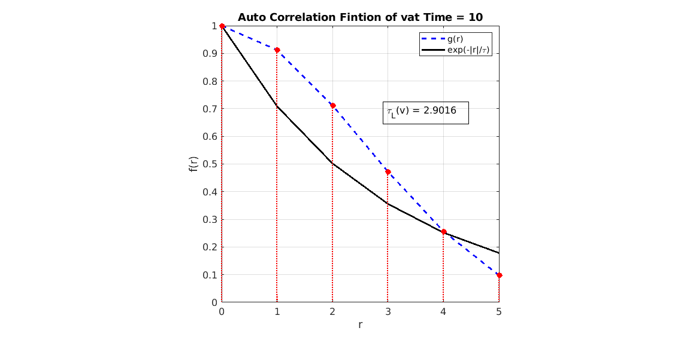

Contents
- Reading Data
- Q1 - Plot the signal of U and V wrt x
- Q2 - Plot the probability density function (PDF) of U and V. Show that the PDF satisfies the equation (3.16) in the textbook.
- Q3 - Show that U and V are statistically homogeneous in the x direction.
- Q- 4 Compute the ensemble averages of U and V
- Q - 5 Plot the scatter plot of U and V.
- Q6 Plot the joint probability density function (JPDF) of u and v, where u and v are velocity fluctuations in the streamwise and wall-normal directions, respectively. Show that theJPDF satisfies the equation (3.89) and (3.90) in the textbook
- Q7 - Compute the variance of U and V and the covariance of U and V
- Q 8 - Plot the autocorrelation functions f(r/h) and g(r/h) and compute the corresponding integral length scales
% ID - 202183504, Name - Choudhary Kailash
Original Code Link: GitHub_Code
clear all close all
Reading Data
clc data_path = "/media/ksm/Kailash_3/Kailash/Course_work/Turbulence/Project/dataset" addpath(data_path); startRow = 2; formatSpec = '%13f%13f%f%[^\n\r]'; n_files = dir(fullfile(data_path, '*.dat')); data = {}; for i=1:numel(n_files) filename = strcat(sprintf('INS_Vel_%06d.dat', i)); fileID = fopen(filename,'r'); dataArray = textscan(fileID, formatSpec, 'Delimiter', '', 'WhiteSpace', '', 'TextType', 'string', 'HeaderLines' ,startRow-1, 'EndOfLine', '\r\n'); data{i} = table(dataArray{1:end-1}, 'VariableNames', {'X','U','V'}); end clear fileID dataArray startRow i formatSpec;
data_path =
"/media/ksm/Kailash_3/Kailash/Course_work/Turbulence/Project/dataset"
Q1 - Plot the signal of U and V wrt x
figure(1)
data1 = data{1};
subplot(1,2,1);
plot(data1.X, data1.U, '-.b','LineWidth',2,'MarkerSize',1);
xlabel('X');
ylabel('U');
title('X v/s U');
set(gca, 'FontSize', 10);
subplot(1,2,2);
plot(data1.X, data1.V, '-.g','LineWidth',2,'MarkerSize',1);
xlabel('X');
ylabel('V');
title('X v/s V')
sgtitle('Q1 - U and V wrt x', 'FontWeight', 'Bold');
set(gca, 'FontSize', 10);
set(gcf, 'Units', 'Inches', 'Position', [0, 0, 12, 6], 'PaperUnits', 'Inches', 'PaperSize', [12,6])
Q2 - Plot the probability density function (PDF) of U and V. Show that the PDF satisfies the equation (3.16) in the textbook.
% As all velocity data will satisfy eq 3.16. So to have denced data set, % lets combine all data clc U = []; V = []; X = data{1}.X; for i=1:numel(data) U = [U, data{i}.U]; V = [V, data{i}.V]; end % So, basically, U_a has all the u-velocity data. Each coloum will have % data corresponding to one value of time. And each row will have data % corresponding to one value of possition. Same for V_a lgd = {}; lgd_V = {}; times = [1, 10, 20, 30, 40]; CM = jet(length(times)); figure(2) for i=1:numel(times) U_i = U(:,times(i)); V_i = V(:,times(i)); U_mean = mean(U_i); U_skew = skewness(U_i); U_std = std(U_i); V_mean = mean(V_i); V_skew = skewness(V_i); V_std = std(V_i); % pd = fitdist(U_i, 'Normal'); %pdf(pd, U_range); U_range = 0:0.001:1; U_pdf = pdf('Normal',U_range, mean(U_i),std(U_i)); area_U = trapz(U_range, U_pdf); ax1 = subplot(1,2,1); fig1 = plot(U_range, U_pdf, 'color', CM(i, :), 'LineWidth', 2); hold on lgd{i} = strcat('Time = ', num2str(times(i))); %pd = fitdist(V_i, 'Normal'); %pdf(pd, V_range); V_range = -0.15:0.001:0.15; V_pdf = pdf('Normal',V_range, mean(V_i),std(V_i)); area_V = trapz(V_range, V_pdf); ax2 = subplot(1,2,2); plot(V_range, V_pdf, 'color', CM(i, :), 'LineWidth', 2) hold on disp(['Time = ', num2str(times(i))]); disp(['Area unter the U-PDF = ', num2str(area_U)]); disp(['Area unter the V-PDF = ', num2str(area_V)]); disp('--------------------------------') end sgtitle('Q2 - PDF of U and V at different times', 'FontWeight', 'Bold'); legend(ax1, lgd); legend(ax2, lgd); set(ax1, 'FontSize', 12); set(ax2, 'FontSize', 12); xlabel(ax1, 'U'); xlabel(ax2, 'V'); ylabel(ax1, 'PDF'); ylabel(ax2, 'PDF'); set(gcf, 'Units', 'Inches', 'Position',... [0, 0, 12, 6], 'PaperUnits', 'Inches', 'PaperSize', [12 6]) % name = 'Part2.png'; % print('-dpng','-r600',name); %
Time = 1 Area unter the U-PDF = 0.99849 Area unter the V-PDF = 0.99977 -------------------------------- Time = 10 Area unter the U-PDF = 1 Area unter the V-PDF = 1 -------------------------------- Time = 20 Area unter the U-PDF = 1 Area unter the V-PDF = 1 -------------------------------- Time = 30 Area unter the U-PDF = 0.99999 Area unter the V-PDF = 1 -------------------------------- Time = 40 Area unter the U-PDF = 0.99979 Area unter the V-PDF = 1 --------------------------------
Q3 - Show that U and V are statistically homogeneous in the x direction.
% Statistically homogeneous in x direction means if we replace x with x+X, % the statistics (mean) should not change. So, lets take mean of U and V % for all time intances (row wise), so we will get time mean velocity of % each position % Dear Sir, the last point (X = 12.54) U-mean deviating largely from the mean % data, so I am ignoring that data in plot(last row of the data set) U_mean = mean(U, 2); % time mean V_mean = mean(V, 2); % Mean absolute percentage error abs_err_U = 100 * (1/length(U_mean)) * sum(abs((U_mean - mean(U_mean))./U_mean)); % Absolute value of V is very low, so the absolute error in V coming high abs_err_V = 100 * (1/length(V_mean)) * sum(abs((V_mean - mean(V_mean))./V_mean)); figure plot(X(1:end-1), U_mean(1:end-1), 'r', 'LineWidth', 2); hold on plot(X, V_mean, 'b', 'LineWidth', 2); title('Time mean U and V at all values of x') xlabel('X'); ylabel('Time averaged Velocity'); legend('U_{avg}', 'V_{avg}'); set(gcf, 'Units', 'Inches', 'Position', [0, 0, 12, 6], 'PaperUnits', 'Inches', 'PaperSize', [12, 6]) % name = 'Part3.png'; % print('-dpng','-r600',name); disp('The mean U and V are almost constant with positions, So, they are homogeneous with x');
The mean U and V are almost constant with positions, So, they are homogeneous with x
Q- 4 Compute the ensemble averages of U and V
% ensemble averaging is just average over N-repetitions, So, bassically at % each position, is is time average. % In code it is just average of each row (Same as last question) % Morever, ensemble average itself a random variable and average of this % random veriable will be <U> % Mean of ensemble average random variable avg_ens_U = mean(U_mean); % <U> avg_ens_V = mean(V_mean); % <V> disp('ensempble average already plotted in Q3'); disp(['<U> = ', num2str(avg_ens_U)]); disp(['<V> = ', num2str(avg_ens_V)]);
ensempble average already plotted in Q3 <U> = 0.43098 <V> = 0.0017193
Q - 5 Plot the scatter plot of U and V.
lgd = {};
times = [1, 10, 20, 30, 40];
CM = jet(length(times));
for i=1:numel(times)
U_i = U(:,times(i));
V_i = V(:,times(i));
figure
scatterhist(U_i, V_i, 'Kernel','on','Location','SouthWest',...
'Direction','out','Color','b','LineWidth',2,'Marker','s','MarkerSize',5);%, 'MarkerEdgeColor','red', 'MarkerFaceColor',[1 .6 .6])
title(strcat('Time = ', num2str(times(i))));
set(gca, 'FontSize', 12);
axis('square');
xlabel('U');
ylabel('V');
set(gcf, 'Units', 'Inches', 'Position',...
[0, 0, 12, 6], 'PaperUnits', 'Inches', 'PaperSize', [12 6]);
end


Q6 Plot the joint probability density function (JPDF) of u and v, where u and v are velocity fluctuations in the streamwise and wall-normal directions, respectively. Show that theJPDF satisfies the equation (3.89) and (3.90) in the textbook
% Perturbation is just u = U - <U>. Value of <U> can be calculated by % taking avgrage of ensemble average. (Eq. 3.109) u = U - avg_ens_U; v = V - avg_ens_V; u_range = linspace(-0.4, 0.4, 100); v_range = linspace(-0.15, 0.15, 100); u_pdf = pdf('Normal', u_range, mean2(u), std2(u)); v_pdf = pdf('Normal', v_range, mean2(v), std2(v)); uv_pdf = v_pdf'*u_pdf; [u_r, v_r] = meshgrid(u_range, v_range); figure surf(u_r, v_r, uv_pdf); colormap('parula'); cb = colorbar('eastoutside'); set(gca, 'FontSize', 12); xlabel('u'); ylabel('v'); zlabel('PDF'); set(gcf, 'Units', 'Inches', 'Position',... [0, 0, 12, 6], 'PaperUnits', 'Inches', 'PaperSize', [12 6]) title('Joint PDF of U and V for all time and position data'); % eq 3.89 f2_v2 = trapz(u_range, uv_pdf'); figure plot(v_range, f2_v2, '-r', 'LineWidth', 2); hold on plot(v_range, v_pdf, 'sb', 'LineWidth', 2); xlabel('v'); ylabel('PDF'); legend('integration of uv-pdf over V1', 'v-pdf'); set(gcf, 'Units', 'Inches', 'Position', [0, 0, 12, 6], 'PaperUnits', 'Inches', 'PaperSize', [12, 6]) title('Equation 3.89 validation'); disp('Plots of both side of equation 3.89 are overlapping'); area_uv_pdf = trapz(u_range, trapz(v_range, uv_pdf)); disp(['Equation 3.90, area under the uv_pdf = ', num2str(area_uv_pdf)]);
Plots of both side of equation 3.89 are overlapping Equation 3.90, area under the uv_pdf = 0.99952
Q7 - Compute the variance of U and V and the covariance of U and V
% variance and covariance have step to substracet the mean <U> from the % data set. So basically variance or covariance of U and V wil be same as % variance or covariance of u and v. lgd = {}; times = [1, 10, 20, 30, 40]; CM = jet(length(times)); for i=1:numel(times) U_i = U(:,times(i)); V_i = V(:,times(i)); disp(['Time = ', num2str(times(i))]); % Covariance cov_UV = cov(U_i, V_i) %Principle axis - vec- eigenvector, val - eign values matrix [vec, val] = eig(cov_UV); prin_axis = [vec(:,1) * val(1,1), vec(:,2) * val(2,2)] sz = 40; figure scatter(U_i, V_i, sz,'MarkerEdgeColor',[0 .5 .5],... 'MarkerFaceColor',[0 .7 .7],... 'LineWidth',1.5); hold on %plotv(vec, '-', 'LineWidth', 2) %set(v1, 'LineWidth', 2) m1 = vec(2,1)/vec(1,1); b1 = mean(V_i) - m1 * mean(U_i); m2 = vec(2,2)/vec(1,2); b2 = mean(V_i) - m2 * mean(U_i); axisx = [min(U_i), max(U_i)]; axis1y = m1 * axisx + b1; axis2y = m2 * axisx + b2; if val(1,1)>=val(2,2) plot(axisx, axis1y, '-r', 'Linewidth', 2); else plot(axisx, axis2y, '-r', 'Linewidth', 2); end title(['var(U) = ', num2str(var(U_i)), ', var(V) = ', num2str(var(V_i)), ', covariance(U, V) = ', num2str(cov_UV(2,1))]); xlim(axisx);ylim([min(V_i),max(V_i)]); %plot legend(strcat('Time = ', num2str(times(i))), 'First Principal Axis'); set(gca, 'FontSize', 12); axis('square'); xlabel('U'); ylabel('V'); set(gcf, 'Units', 'Inches', 'Position',... [0, 0, 12, 6], 'PaperUnits', 'Inches', 'PaperSize', [12 6]) disp('-----------------------------------'); end
Time = 1
cov_UV =
0.0114 -0.0019
-0.0019 0.0016
prin_axis =
-0.0002 -0.0115
-0.0012 0.0021
-----------------------------------
Time = 10
cov_UV =
0.0107 -0.0007
-0.0007 0.0003
prin_axis =
-0.0000 -0.0107
-0.0002 0.0007
-----------------------------------
Time = 20
cov_UV =
0.0042 -0.0001
-0.0001 0.0001
prin_axis =
-0.0000 -0.0042
-0.0001 0.0001
-----------------------------------
Time = 30
cov_UV =
0.0085 -0.0005
-0.0005 0.0003
prin_axis =
-0.0000 -0.0085
-0.0003 0.0005
-----------------------------------
Time = 40
cov_UV =
0.0127 -0.0012
-0.0012 0.0002
prin_axis =
-0.0000 -0.0127
-0.0001 0.0012
-----------------------------------
Q 8 - Plot the autocorrelation functions f(r/h) and g(r/h) and compute the corresponding integral length scales
lgd = {};
times = [1, 10, 20, 30, 40];
CM = jet(length(times));
clc
for i=1:numel(times)
u_i = u(:,times(i));
v_i = v(:,times(i));
% auto correlation function (Matlab funtion "autocorr" returns the normalized auto-covariance so no need to devide by variance)
[fr, r_fr] = autocorr(u_i);
[gr, r_gr]= autocorr(v_i);
% To find out the lenth scale, we need to consider the auto-covariance
% function only up to positive values (1 to 0).
% first negative value finder
if any(fr<0)
fr_1st_neg = find(~(fr>=0), 1, 'first');
fr = fr(1:fr_1st_neg-1);
r_fr = r_fr(1:fr_1st_neg-1); % to start from zero
end
if any(gr<0)
gr_1st_neg = find(~(gr>=0), 1, 'first');
gr = gr(1:gr_1st_neg-1);
r_gr = r_gr(1:gr_1st_neg-1); % to start from zero
end
% integral length scales
tl_u = trapz(r_fr, fr);
tl_v = trapz(r_gr, gr);
% exp(-|r|/tl) plot
f_exp = exp(-r_fr/tl_u);
g_exp = exp(-r_gr/tl_v);
figure
plot(r_fr, fr, '--b', 'Linewidth', 2)
hold on
plot(r_fr, f_exp, '-k', 'linewidth', 2);
stem(r_fr, fr, ':r', 'filled', 'linewidth', 1.5)
dim = [0.55 0.4 0.3 0.3];
str = {['\tau_L(u) = ', num2str(tl_u)]};
annotation('textbox',dim,'String',str,'FitBoxToText','on', 'Fontsize', 12);
legend('f(r)', 'exp(-|r|/\tau)');
grid on
title(['Auto Correlation Fintion of u at Time = ', num2str(times(i))])
set(gca, 'FontSize', 12);
axis('square');
xlabel('r');
ylabel('f(r)');
set(gcf, 'Units', 'Inches', 'Position',...
[0, 0, 12, 6], 'PaperUnits', 'Inches', 'PaperSize', [12 6])
figure
plot(r_gr, gr, '--b', 'Linewidth', 2)
hold on
plot(r_gr, g_exp, '-k', 'linewidth', 2);
stem(r_gr, gr, ':r', 'filled', 'linewidth', 1.5)
dim = [0.55 0.4 0.3 0.3];
str = {['\tau_L(v) = ', num2str(tl_v)]};
annotation('textbox',dim,'String',str,'FitBoxToText','on', 'Fontsize', 12);
legend('g(r)', 'exp(-|r|/\tau)');
grid on
title(['Auto Correlation Fintion of vat Time = ', num2str(times(i))])
set(gca, 'FontSize', 12);
axis('square');
xlabel('r');
ylabel('f(r)');
set(gcf, 'Units', 'Inches', 'Position',...
[0, 0, 12, 6], 'PaperUnits', 'Inches', 'PaperSize', [12 6])
end
 